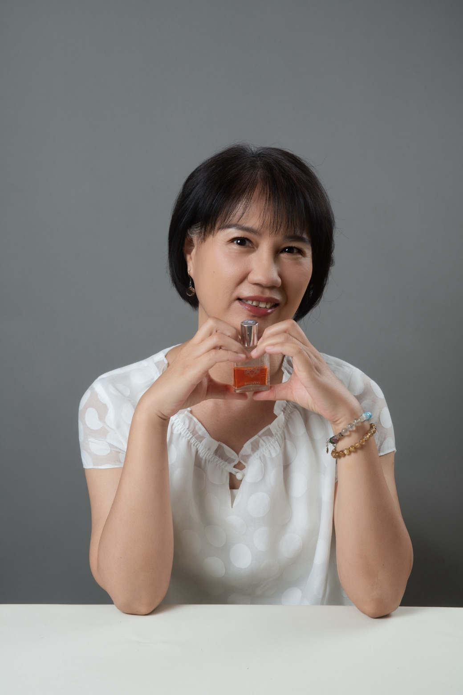

MY STORY
我的故事
25 年科技業職涯後，我重新學會傾聽身體的聲音

我是 珍珍。25 年的上班族科技業職涯，每天家裡公司兩點一線的忙碌生活，讓我學會效率、責任與堅持。但也因為長年的高壓工作，讓我開始重新思考:「健康，到底是什麼？」
當我在情緒花園接觸到澳洲花晶後，第一次發現，原來身體會說話，情緒也值得被理解。
因此創立了【拾光花】，希望陪伴更多人願意投資自己、照顧身體、變得更健康。
拾光花這三個字，其實有一個很美的雙重含義:
拾｜拾起、重新找回
光｜光亮，也代表時光
花｜花晶，也象徵綻放
這裡不是一間普通工作室，而是每個人能拾起美好時光、讓身心自在綻放，願意慢下來、安心休息、重新照顧自己的地方。
每一次相遇，都是陪伴一個人重新找回自己的開始。